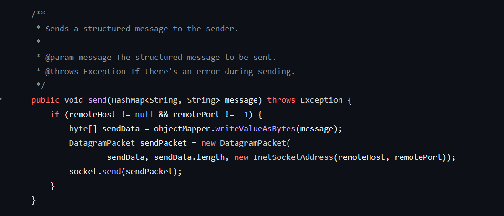

Reliable Transport Protocol
This is a Reliable Transport Protocol written in Java as a partner assignment for Networks and Distributed Systems. The program was run in a simulated network provided by our professor. The aim was to maximum speed while minimizing data sent over the network. The protocol can handle duplicate packets and ACKs, changing delay in the network, dropped packets, corrupted packets, and different latencies and bandwidths. The class does not allow me to make my repository public but access can be granted upon request.
CS3700 Project 4 : Reliable Transport Protocol
Overview
This Reliable Transport Protocol (RTP) implementation is designed to ensure the consistent and ordered delivery of packets between a sender and a receiver over an unreliable network. The protocol uses various techniques and features to mitigate issues like dropped packets and to achieve efficient and reliable data transfer.
High-Level Approach
- Sliding Window Algorithm: Implemented to ensure that a specified number of unacknowledged packets can be in transit at any given time. This helps in maintaining throughput while also handling dropped packets efficiently.
- Sequence Numbers: Each packet is assigned a unique sequence number. This aids in the identification of lost packets and helps ensure in-order delivery.
- Acknowledgments (ACKs): The receiver sends an ACK for every packet received. This informs the sender about successful reception and the readiness for the next set of packets.
- Round-Trip Time (RTT) Estimation: Implemented to adaptively adjust the resend time for packets that aren't acknowledged, enhancing performance.
- Packets Resend Mechanism: If a packet isn't acknowledged within the estimated RTT, it's retransmitted.
- JSON Serialization: For structuring the packet data, easing the parsing process and ensuring extensibility of packet fields.
Challenges Faced
- Dropped Packets: One of the inherent challenges in an unreliable network is the dropping of packets. We addressed this by incorporating an acknowledgment mechanism and a retransmission strategy based on RTT estimation.
- Implementing the Sliding Window: Achieving the correct balance between throughput and network congestion was challenging. Too large a window might flood the network, while too small a window might underutilize it.
- Performance Enhancement: Ensuring optimal performance without compromising reliability was key. We achieved this through adaptive RTT estimation and efficient packet serialization/deserialization techniques.
Features of the Design
- Modularity: The code is structured into distinct classes like Sender, Receiver, and SenderThread, promoting clarity and maintainability.
- Concurrency: With the help of the SenderThread, packets can be sent concurrently, maximizing throughput.
- Adaptive Behavior: The protocol can adapt to network conditions by adjusting the time it waits before resending a packet based on current RTT estimates.
- Extensibility: The use of JSON for packet structure means new fields can be added in the future with minimal changes.
- Logging: Uses System.err to log important events and potential issues, aiding in debugging and monitoring.
Testing
- Logging: We heavily rely on logging (using System.err) to get insights into the protocol's behavior, packet drops, retransmissions, and more.
- Simulator: Utilized a provided simulator to mimic various network conditions and validate the reliability and performance of the RTP implementation. This helps in ensuring the protocol behaves as expected under different scenarios.